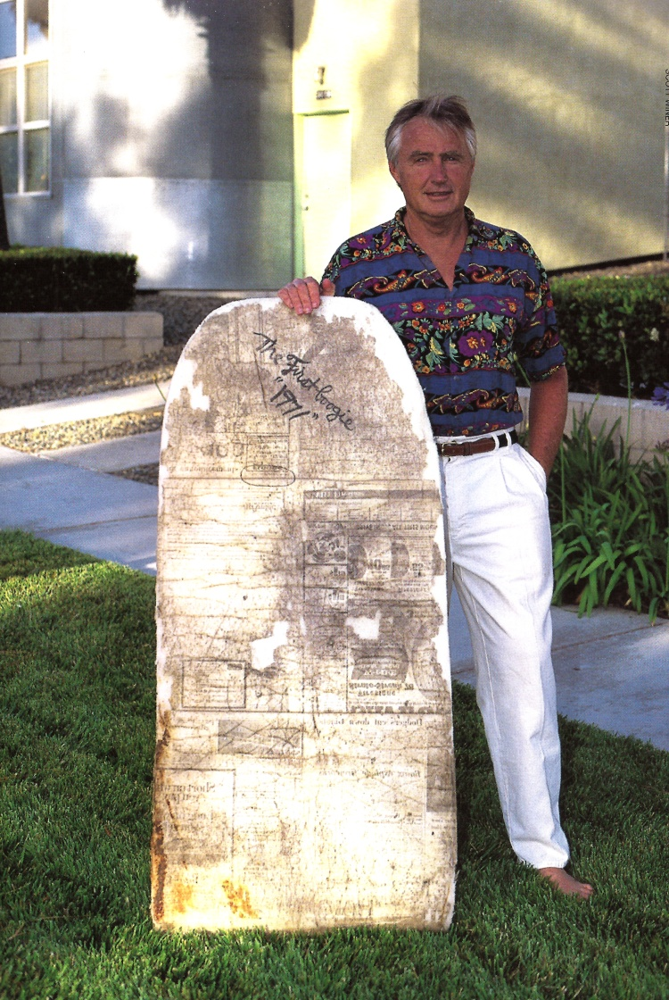

While we can trace bodyboarding all the way back to the indigenous Polynesians who rode wooden Alaia boards, it wasn’t until 1971 that we were faced with the modern bodyboard design that we know and love today. This is all thanks to the bodyboard, or boogieboard, inventor: Tom Morey. On July 9, 1971, Tom Morey woke up with the feeling to create something brand new. He shaped a small plank that was just 23” wide and 4’6” long. It only weighed 3 pounds. Of course since he was living on the Big Island, he needed to test it out. He paddled his way out into Honels, a popular spot on the Western side of the island, and rode the board around in the knee-high surf. There was no doubt in his mind that he had made something big. Less than a year later, Morey decided to sign a deal with G&S Surfboards to manufacture and distribute boards. The brand name: Morey Boogie. He was absolutely the pioneer of the new sport and sold thousands of boards to people around the world who were eager to be a part of the new movement.